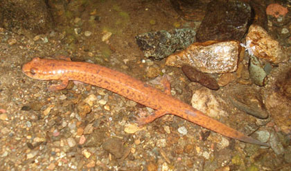
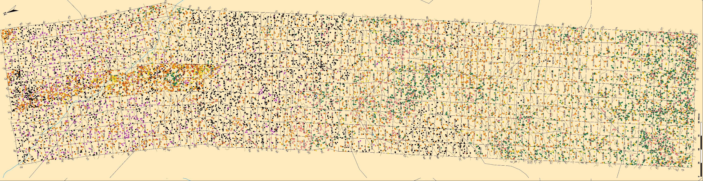
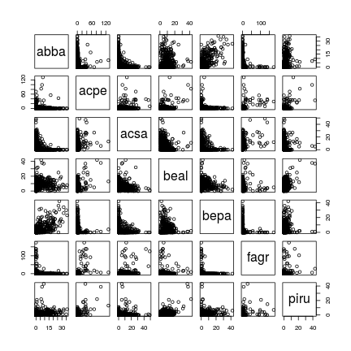
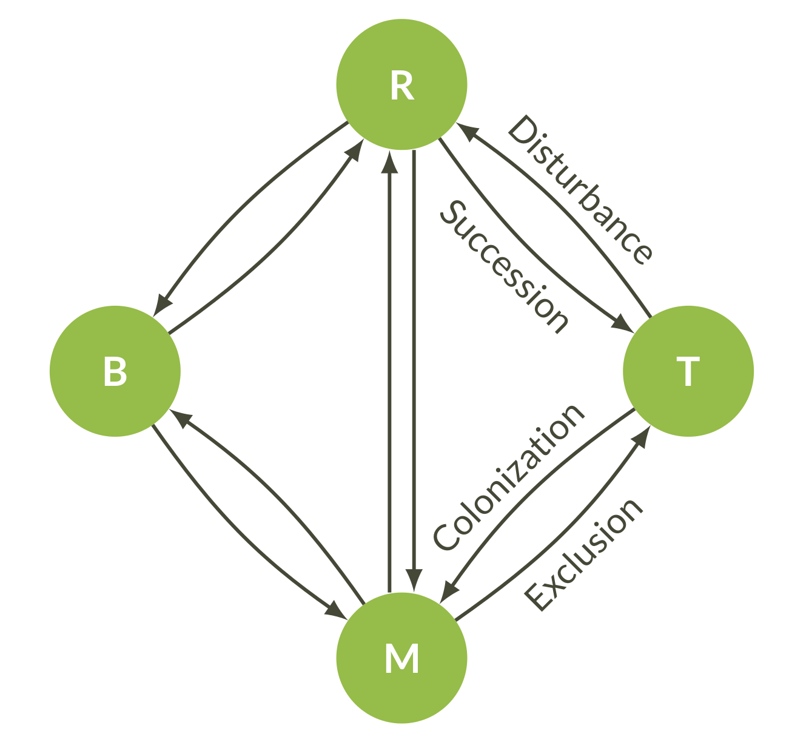
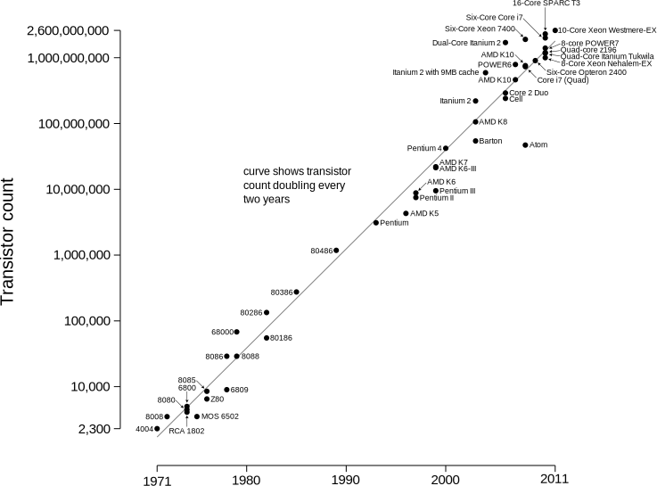
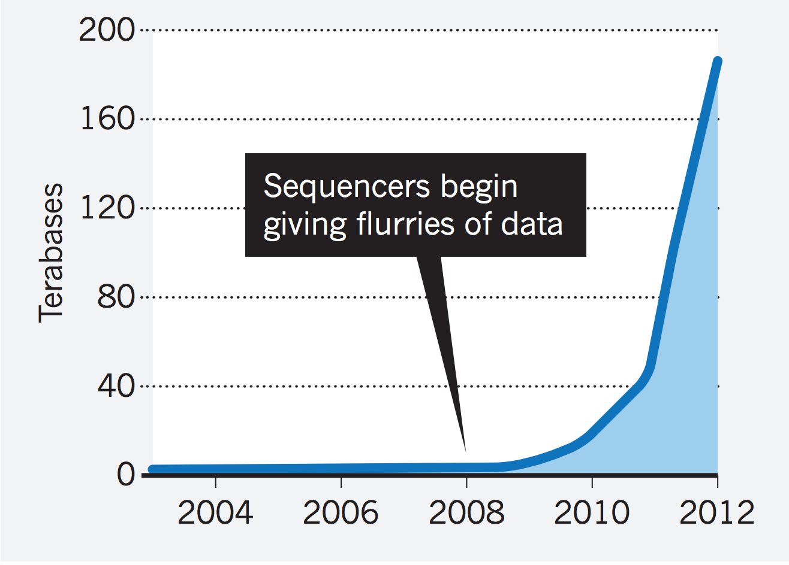
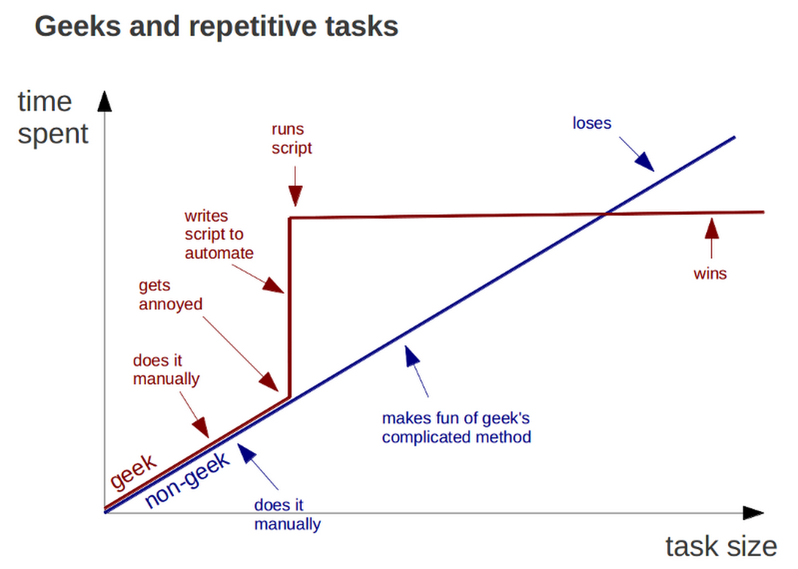
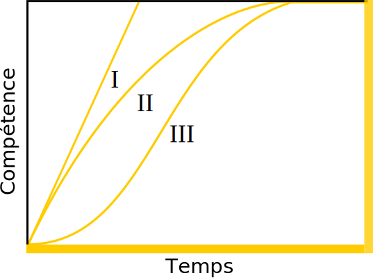
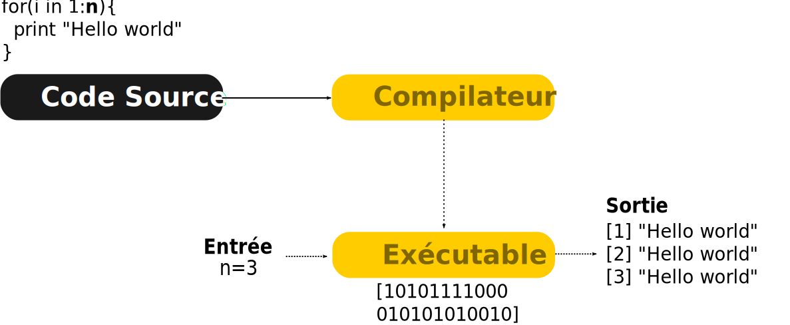
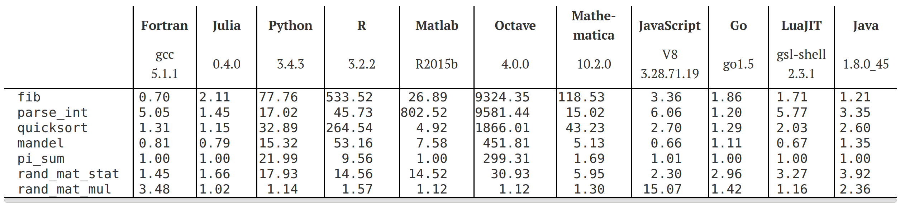

Introduction à la programmation scientifique
Cours 1
Dominique Gravel
Laboratoire d'Ecologie Integrative, UdS
Introduction
Introduction

Introduction

Introduction
Introduction
Introduction

Introduction
Introduction

Question de recherche
À quelle vitesse se réalisera la migration de l'érable à sucre, et des espèces associées, au sein de la sapinière de montagne du massif des Montagnes vertes ?
Le type de données
arbres = read.table(file = './données/arbres.txt', header = TRUE, sep=";")
head(arbres)
## id_bor borx bory arbre esp multi mort dhp
## 1 0-0 0 0 34501 acpe FAUX FAUX 82
## 2 0-0 0 0 34502 acpe VRAI FAUX 26
## 3 0-0 0 0 34502 acpe VRAI FAUX 98
## 4 0-0 0 0 34503 acpe FAUX FAUX 73
## 5 0-0 0 0 34504 acpe FAUX VRAI 28
## 6 0-0 0 0 34506 fagr FAUX FAUX 26
Exercice 1
Ouvrir le fichier arbres.txt avec Excel et calculer le nombre d'individus de chaque espèce pour le quadrat 1.
Exercice 1: solution sur R
arbres = read.table(file = './données/arbres.txt', header = TRUE, sep=";")
quadrats = table(arbres$id_bor,arbres$esp)
head(quadrats)
##
## abba acpe acsa beal bepa fagr piru
## 0-0 1 55 11 7 0 92 0
## 0-100 0 5 4 3 0 6 0
## 0-120 2 7 12 4 1 7 0
## 0-140 4 5 4 8 1 2 1
## 0-160 2 2 11 8 1 6 1
## 0-180 5 3 9 7 0 3 1
Exercice 2
Ouvrir le fichier quadrats.txt avec Excel et calculer la corrélation entre toutes les paires d'espèces.
Petit truc: sur Excel, la fonction pour calculer une corrélation est:
=covariance.pearson(données_1; données_2)
Exercice 2: solution sur R
quadrats = read.table(file = './données/quadrats.txt', header = TRUE, sep= ";")
cor(quadrats)
## abba acpe acsa beal bepa fagr
## abba 1.00000000 -0.06189199 -0.4873081 0.18266806 0.66577551 -0.1807264
## acpe -0.06189199 1.00000000 0.2231896 0.26639705 -0.11178181 0.4497004
## acsa -0.48730810 0.22318962 1.0000000 -0.37074281 -0.32902435 0.3335518
## beal 0.18266806 0.26639705 -0.3707428 1.00000000 -0.03018735 -0.1099725
## bepa 0.66577551 -0.11178181 -0.3290244 -0.03018735 1.00000000 -0.1535915
## fagr -0.18072638 0.44970044 0.3335518 -0.10997247 -0.15359149 1.0000000
## piru 0.27465133 0.55061981 -0.1440152 0.50423458 0.13387469 0.1929323
## piru
## abba 0.2746513
## acpe 0.5506198
## acsa -0.1440152
## beal 0.5042346
## bepa 0.1338747
## fagr 0.1929323
## piru 1.0000000
Exercice 2: visualisation sur R
plot(quadrats)

Objectif général
Au terme de ce cours, l'étudiant sera en mesure de conceptualiser un problème qui requiert de la programmation scientifique et de réaliser des tâches courantes de programmation.
Objectifs spécifiques
- Charger des données et exporter des résultats d'analyses au moyen du logiciel R;
- Conceptualiser un problème au moyen de pseudo-code;
- Manipuler des données;
- Rédiger des fonctions;
- Programmer des algorithmes afin de réaliser des tâches complexes, incluant des boucles et des énoncés conditionnels;
- Réaliser des simulations de Monte Carlo;
Contenu
- Introduction et bonnes pratiques de programmation
- Démystifier le langage R
- Les fonctions
- Algorithmique I: boucles et conditions
- Alogithmique II: simulations de Monte Carlo
Approche
Les connaissances requises pour la programmation scientifique sont minimales, l'apprentissage porte davantage sur l'acquisition de compétences et le développement de capacités à la résolution de problèmes. Les séances seront constituées de courtes leçons magistrales sur des notions de bases de programmation, entre-coupées d'exercices spécifiques destinés à pratiquer les éléments enseignés. Les séances se conclueront sur la réalisation d'un exercice intégrateur à compléter à la maison.
L'ensemble du matériel du cours sera disponible sur un dépôt git à l'adresse : https://github.com/EcoNumUdS/BIO109.git
Évaluation
L'évaluation porte sur la participation aux exercices (20%) et sur un travail final (80%). Un exercice simple sera présenté à la fin des séances 1-4 et chaque étudiant devra remettre la solution de l'exercice sous forme de script avant le début de la séance suivante. Les exercices peuvent être réalisés en groupe, mais chaque étudiant devra remettre sa propre copie, personnalisée. Les points sont attribués pour la participation.
L'évaluation finale portera sur la réalisation d'un projet de programmation en équipe de 4 à remettre deux semaines après la fin du dernier cours, soit au plus tard le 21 février 2017 à 16:00. La pénalité sera de 10% par jour de retard. Le rapport final sera évalué à parti de i) le pseudo-code pour le projet de programmation, ii) le respect des bonnes pratiques de programmation et iii) la réussite de l'exercice demandé. Les étudiants devront remettre le script nécessaire à la réalisation du projet.
La place de la programmation en écologie
Hier
La dynamique d'une population:
\[ \frac{dN}{dt} = rN(1-\frac{N}{K}) \]
Qui donne pour solution à l'équilibre:
\[ N^* = K \]
Aujourd'hui

Aujourd'hui

Et demain, la modélisation de la biosphère?

Progression de la puissance de calcul

Utilisation en science au quotidien
La programmation est outil indispensable au biologiste 2.0, elle permet:
- Tâches répétitives et/ou complexes (e.g. Nettoyage des données, Simulations stochastiques)
- Visualisation et exploration des données
- Analyses statistiques avancées (e.g. tests par permutations, statistiques bayesiennes)
La programmation en science
Avantages
- Gain de temps
- Limiter les erreurs
- Formaliser les opérations
- Archiver, reproduire et partager
- Tâches intensives (e.g. en génomique)
Augmentation du volume de données génomiques
 Nature 2013
La programmation en science

La programmation en science
Inconvénients
- L'erreur est avant tout humaine, avant d'être informatique
- La courbe apprentissage peut être difficile

Les langages de programmation
Deux grandes familles de langage
- Les langages compilés
- Les langages interprétés
1. Les langages compilés

2. Les langages interprétés
Interprété vs compilé
df <- c(' ')
pander::pander()
## Error in if (tail(stdout, 1) == "") {: l'argument est de longueur nulle
La performance est un critère pour le choix d'un langage

Un autre critère est le 'débugging'

Et en écologie?
Le Pseudo-Code
Le Pseudo-Code et ses algorithmes
Définitions
- En programmation, le
pseudo-codeest une façon de formuler un algorithme sans référence à un langage de programmation en particulier.
- Un algorithme est une suite d'actions qui sont réalisées dans un ordre précis par l'ordinateur. C'est une séquence d'étapes dans la résolution d'un problème.
Le Pseudo-Code
Exemple
PROGRAM DEMO
FOR t IN 1:100
n_t = n_t * lambda
PRINT n_t
IF n_t < 1
BREAK
ELSE
CONTINUE
END IF
END FOR
Le programme DEMO fait croitre une population à un taux \(\lambda\) et affiche à l'utilisateur si la population est éteinte (\(n_t<1\)) ou vivante (\(n_t>1\)).
Le Pseudo-Code
Exemple
PROGRAM DEMO
FOR t IN 1:100 <------------- Opération itérative
n_t = n_t * lambda
PRINT n_t <---------------- Le programme affiche la valeur à l'écran
IF n_t < 1 <--------------- Opération décisionnelle
BREAK <------------------ Le programme arrête son éxécution
ELSE
CONTINUE <--------------- Le programme continue son éxécution
END IF
END FOR
Le programme DEMO fait croitre une population à un taux \(\lambda\) et affiche à l'utilisateur si la population est éteinte (\(n_t<1\)) ou vivante (\(n_t>1\)).
Les structures de base d'un algorithme
On retrouve 3 familles d'opérations:
- Les opérations séquentielles
- Les opérations itératives (
FOR,WHILE) - Les opérations décisionnelles (
IF,SWITCH)
1. Les opérations séquentielles
Exemple: Calculer l'aire d'un rectangle
PROGRAM REC_AIRE
READ hauteur
READ largeur
WRITE hauteur * largeur
C'est une progression linéaire car chaque opération est effectuée l'une après l'autre dans un ordre déterminé.
2. Les opérations itératives
Exemple avec FOR: Croissance avec capacité de support (K)
PROGRAM DEMO
FOR t IN 1:100
n_t = n_t * lambda
END FOR
La population va croître pendant 100 pas de temps.
2. Les opérations itératives
Exemple avec WHILE: Croissance avec capacité de support (K)
PROGRAM DEMO
WHILE n_t < K
n_t = n_t * lambda
END WHILE
3. Les opérations décisionnelles
Exemple avec IF: quelques tests sur \(\lambda\)
PROGRAM DEMO
IF lambda > 0
PRINT "La population est croissante"
ELSE lambda < 0
PRINT "La population est décroissante"
ENDIF
- Et si le taux de croissance est nulle?
3. Les opérations décisionnelles
PROGRAM DEMO
IF lambda > 0
PRINT "La population est croissante"
IF ELSE lambda < 0
PRINT "La population est décroissante"
ELSE
PRINT "Absence de croissance"
ENDIF
Avec la clause ELSE, l'absence de croissance est assumé (non-testé)
Les règles du pseudo-code
A garder en mémoire
- N'écrivez qu'une seule instruction par ligne de pseudocode.
- Écrivez en lettres capitales le verbe de chaque opération principale.
- Soyez explicite en nommant les opérations et les variables.
- Soyez le plus détaillé possible (c.a.d les plus petites étapes possibles)
- Utilisez des structures de langages de programmation connus (c.a.d
WHILE,FOR,IFetc.) - Délimitez les étapes en formant des blocs d'instructions par l'utilisation de l'indentation.
Exercice
Ordonner les lettres de Scrabble
Exercice 3
Une situation qui peut arriver tous les jours:
- On jette en face de vous 6 lettres d'un scrabble
- Un joueur maniac vous demande d'écrire un programme permettant d'ordonner les 6 lettres
Image de scrabble